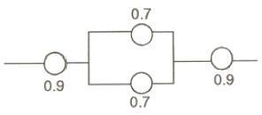
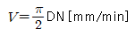
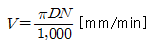
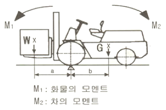
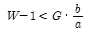
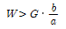
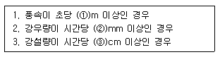

산업안전산업기사 (2006-05-14 기출문제)
1과목: 산업안전관리론
1. 다음 중 재해방지 기본원칙에 해당되지 않는 것은?
- 대책 선정의 원칙
- 손실 우연의 원칙
- 예방 가능의 원칙
- 통계 방법의 원칙
(정답률: 87%)

2. 맥그리거(MCgregor)의 인간해석 중 Y이론의 관리처방은?
- 면밀한 감독과 엄격한 통제
- 분권화와 권한의 위임
- 경제적 보상체제의 강화
- 권위주의적 리더쉽의 확립
(정답률: 62%)
3. 우선 평행의 호를 보고 이어 직선을 본 경우에 직선은 호와의 반대방향에 보이는 착시현상은?
- 동화착오
- 분할착오
- 윤곽착오
- 방향착오
(정답률: 71%)
4. 생산의 양과 질의 저하를 지표로 하여 알 수 있는 피로는?
- 주관적 피로
- 생리적 피로
- 정신적 피로
- 객관적 피로
(정답률: 55%)
5. 1일 8시간 년간 300일, 100명의 근로자가 근무하고 있는 어떤 화학공장이 있다. 1년 동안 8명이 부상 당하는 재해가 발생하여 휴업일수 219일의 손실을 가져왔다면 근로 총 손실일수와 강도율은?
- 손실일수 : 160일, 강도율 : 0.91
- 손실일수 : 170일, 강도율 : 0.81
- 손실일수 : 180일, 강도율 : 0.75
- 손실일수 : 219일, 강도율 : 0.91
(정답률: 55%)
6. 교육훈련 방법 중 강의식 교육의 장점이 아닌 것은?
- 한번에 많은 사람이 지식을 부여받는다.
- 참가자가 능동적으로 참가한다.
- 시간의 계획과 통제가 용이하다.
- 체계적으로 교육할 수 있다.
(정답률: 73%)
7. 우리나라에서 어떤 한 해의 산업재해로 인한 경제적 직접손실액(산재보상금 지급액)이 2조원으로 집계되었다. 하인리히의 직접비와 간접비의 비율을 적용해 볼 때 총 경제적 손실 추정액은 얼마인가?
- 4조원
- 6조원
- 8조원
- 10조원
(정답률: 61%)
8. 피로의 측정방법 3가지가 아닌 것은?
- 생리학적 측정
- 물리학적 측정
- 생화학적 측정
- 심리학적 측정
(정답률: 45%)
9. 무재해 운동을 추진하기 위한 3가지 요소(기둥)에 해당되지 않는 것은?
- 최고 경영자의 경영자세
- 직장 자주 활동의 활발화
- 라인 관리자에 의한 안전보건 추진
- 직장 상, 하 간의 체계확립 및 명령이행
(정답률: 70%)
10. 재해발생 형태별 분류 가운데 물건이 주체가 되어 사람이 상해를 입는 경우에 해당 되는 것은?
- 추락
- 전도
- 낙하ㆍ비례
- 충돌
(정답률: 73%)
11. 안전교육에서 3가지 기본교육에 해당되지 않는 것은?
- 안전지식교육
- 안전기능교육
- 안전태도교육
- 안전실시교육
(정답률: 82%)
12. 안전ㆍ보건교육 중 채용시 교육내용과 가장 거리가 먼 것은?
- 당해 설비ㆍ기계 및 기구의 작업안전점검에 관한 사항
- 현장 안전개성방법 및 조사방법에 관한 사항
- 기계ㆍ기구의 위험성과 안전작업방법에 관한 사항
- 근로자 건강증진 및 산업간호에 관한 사항
(정답률: 55%)
13. 다음 중 라인식 안전조직이 특성이 아닌 것은?
- 규모가 작은 사업장에 적용된다.
- 참모식 조직보다 경제적인 조직이다.
- 안전관리 전담 요원을 별도로 지정한다.
- 모든 명령은 생산 계통을 따라 이루어진다.
(정답률: 65%)
14. 다음 중 사고의 직접원인은 어느 것인가?
- 개인적 결함
- 사회적 환경
- 유전적 요소
- 불안전한 상태
(정답률: 71%)
15. 안전표지 중 들것, 비상구, 응급구호표지를 나타내는 색은?
- 적색
- 황색
- 녹색
- 주황색
(정답률: 87%)
16. 에너지 대사율(RMR)이 높은 경우 사고예방 대책으로 가장 적당한 것은?
- 작업시간의 연장
- 휴식시간의 증가
- 임금의 증액
- 작업강도의 증가
(정답률: 84%)
17. 강의식 교육지도에서 가장 많은 시간이 할당되는 단계는?
- 도입단계
- 제시단계
- 적용단계
- 확인단계
(정답률: 64%)
18. 산업안전보건법상 안전모를 구분할 때, 물체의 낙하 및 비래에 의한 위험을 방지 또는 경감하고, 머리부위 감전에 위한 위험을 방지하기 위하여 사용하는 안전모는?
- A
- AB
- AE
- ABE
(정답률: 61%)
19. 안전대책의 중심적인 내용인 3E에 해당되지 않는 것은?
- Engineering
- Exchange
- Education
- Enforcement
(정답률: 74%)
20. 중규모 사업장에 가장 적합한 안전조직은?
- 참모식 조직
- 라인식 조직
- 위원회 조직
- 라인 및 참모 혼합식 조직
(정답률: 71%)
2과목: 인간공학 및 시스템안전공학
21. 인간공학에 사용되는 인간기준(Human Criteria)의 4가지 유형에 포함되지 않는 것은?
- 사고빈도
- 주관적 반응
- 생리학적 지표
- 심리적 지표
(정답률: 19%)
22. 제조나 생상과정에서의 품질관리 미비로 생기는 고장으로 점검작업이나 시운전으로 예방할 수 있는 고장은?
- 우발고장
- 마모고장
- 초기고장
- 평상고장
(정답률: 69%)
23. 안전성 평가의 기법이 아닌 것은?
- 위험의 예측 평가
- 체크리스트에 의한 평가
- 고장 모드 영향분석
- 재해정보에 의한 평가
(정답률: 33%)
24. 어떤 공장에서 1만 시간 가동하는 동안 부품 15,000개 중 15개의 불량품이 발생하였다. 평균 고장간격(MTBF)은?
- 1 × 106 시간
- 2 × 106 시간
- 1 × 107 시간
- 2 × 107 시간
(정답률: 55%)
25. 기계의 통제기능이 아닌 것은?
- 개폐에 의한 것
- 양의 조절에 의한 것
- 반응에 의한 것
- 자동제어에 의한 것
(정답률: 35%)
26. 작업장에서 발생하는 소음에 대한 대책으로 가장 적극적인 대책은?
- 소음원의 격리
- 소음원의 제거
- 귀마개, 귀덮개 등 보호구의 착용
- 덮개 등 방호장치의 설치
(정답률: 64%)
27. 어떤 부품은 고장까지의 평균시간이 1,000 시간이며, 지수 분포를 따르고 있다. 이 부품을 1,000 시간 작동시킨 경우의 신뢰도는?
- 0.9⑤
- 0.6322
- 0.3678
- 0.095
(정답률: 33%)
28. 다음 시스템의 신뢰도는?

- 0.6261
- 0.7371
- 0.8481
- 0.9591
(정답률: 62%)
29. 수치를 정확히 읽어야 할 경우에 적합한 시각적 표시장치는?
- 동침형
- 동목형
- 수평형
- 계수형
(정답률: 73%)
30. 다음 중 부품 배치의 4원칙에 속하지 않는 것은?
- 중요도의 높음에 따른 우선 배치
- 사용 빈도의 높음에 따른 우선 배치
- 기능별에 따른 그룹화
- 색깔에 따른 우선 배치
(정답률: 79%)
31. 건설현장의 안전표지판의 반사율이 80% 이고, 인쇄된 글자의 반사율이 10% 이면, 대비는 약 몇 % 인가?
- 56
- 65
- 71
- 88
(정답률: 50%)
32. 시스템의 구상단계에서 시스템 고유의 위험 상태를 식별하고 예상되는 재해의 위험 수준을 결정하는 시스템 안전 분석 기법은?
- FTA
- PHA
- FMEA
- ETA
(정답률: 46%)
33. 에너지 대사율을 산출하는 공식을 옳게 나타낸 것은?
- 기초대사량 ÷ 소비에너지량
- 작업대사량 ÷ 기초대사량
- 기초대사량 ÷ 작업대사량
- 소비에너지량 ÷ 기초대사량
(정답률: 35%)
34. 대부분 위치나 구조가 변하는 경향이 있는 요소를 배경에 중첩시켜서 변화되는 상황을 나타내는 장치는?
- 헤드업 표시장치
- 진로 표시장치
- 정량적 표시장치
- 묘사적 표시장치
(정답률: 44%)
35. 동작자의 태도를 보고 동작자의 상태를 파악하는 감시방법은?
- Self monitoring
- Visual monitoring
- 생리학적 monitoring
- 반응에 의한 monitoring
(정답률: 53%)
36. 인간과 기계능력에 대한 실용성 한계에 대한 내용으로 가장 거리가 먼 것은?
- 일반적인 인간과 기계의 비교가 항상 적용된다.
- 상대적인 비교는 항상 변하기 마련이다.
- 기능의 수행이 유일한 기준은 아니다.
- 최선의 성능을 마련하는 것이 항상 중요한 것은 아니다.
(정답률: 51%)
37. 인간이 현존하는 기계를 능가하는 기능은?
- 귀납적 추리를 한다.
- 소음 등 주위가 불안정한 상황에서도 효율적으로 작동한다.
- 암호화된 정보를 신속하게 대량으로 보관한다.
- 입력신호에 대해 신속하고 일관성 있는 반응을 한다.
(정답률: 76%)
38. 제품의 변화, 전달된 통신, 제공된 용역(Service)과 같은 것은 인간-기계통합체계의 기본기능 중 어디에 속하는가?
- 정보 보관
- 행동 기능(신체제어 및 통신)
- 정보 입력
- 출력
(정답률: 32%)
39. 촉각적 표시장치에서 기존 정보 수용기로 주로 사용되는 것은?
- 귀
- 손
- 눈
- 코
(정답률: 79%)
40. 시스템 안전 달성을 위한 시스템 안전 설계 단계 중 위험상태의 최소한 단계에 해당하는 것은?
- 경보장치
- 페일세이프
- 안전장치
- 특수수단 강구
(정답률: 54%)
3과목: 기계위험방지기술
41. 드릴작업의 효율을 증진시키기 위하여 일강의 고정시 사용하는 기구는?
- 브러시(Brush)
- 칩 브레이크(Chip breaker)
- 지그(Jig)
- 햄머(Hammer)
(정답률: 70%)
42. 프레스에 대한 안전장치 중 금형 안에 손이 들어가지 않는 구조(No Hand in Die Type)인 것은?
- 자동송급식
- 양수조작식
- 손쳐내기식
- 감응식
(정답률: 43%)
43. 마찰클러치의 마찰재료의 조건으로 옳지 않은 것은?
- 내열성이 클 것
- 내마모성이 클 것
- 마찰계수가 작을 것
- 공작이 용이할 것
(정답률: 51%)
44. 다음 중 물림점(nip point)를 가진 기계는?
- 롤분쇄기
- 밀링머신
- 연삭기
- 띠톱
(정답률: 48%)
45. 연삭기에서 숫돌의 회전속도를 구하는 공식 중 맞는 것은?

- V=πDN[mm/min]
- V=2πDN[mm/min]

(정답률: 30%)
46. 안전계수 5인 로프의 절단하중이 400kg이라면 이 로프는 얼마 이하의 하중을 매달아야 하는가?
- 50 kg
- 80 kg
- 100 kg
- 160 kg
(정답률: 77%)
47. 기계의 안전조건 중 외관적 안전화(安全化)와 가장 거리가 먼 것은?
- 급정지장치
- 안전색채 조절
- 가드(Guard)의 설치
- 구획된 장소에 격리
(정답률: 53%)
48. 기계설비의 방호방법에서 위험원에 대한 방호방법은?
- 덮개형 방호장치
- 접근반응형 방호장치
- 위치 제한장치
- 접근거부형 방호장치
(정답률: 44%)
49. 프레스에서 동력전달에 가장 중요한 부분은?
- 클러치
- 받침대
- 슬라이드
- 펀치
(정답률: 60%)
50. 양중기에서 절단하중이 100톤인 와이어로프를 사용하여 근로자가 탑승하는 운반구를 지지하는 경우, 와이어로프에 걸리는 최대하중은 얼마로 하여야 하는가?
- 10 톤
- 20 톤
- 25 톤
- 50 톤
(정답률: 53%)
51. 밀링 작업 중 안전 사항에 위배되는 사항은?
- 절삭 속도는 재료에 따라 정한다.
- 절삭 중 칩제거는 칩브레이커로 한다.
- 커터를 끼울 때는 아버를 깨끗이 닦는다.
- 일감을 고정하거나 풀어낼 때는 기계를 정지시킨다.
(정답률: 74%)
52. 선반 작업시 안전 사항에 위배되는 것은?
- 장갑 착용을 금한다.
- 작업 시 공구는 항상 정리해 둔다.
- 기계에 주유 및 청소를 할 때에는 반드시 기계를 정지 시키고 한다.
- 가능한 절삭 방향은 심압대 쪽으로 한다.
(정답률: 70%)
53. 다음은 안전율을 구하는 식이다. 틀린 것은?
- 극한강도/최대설계응력
- 피단하중/안전하중
- 파괴하중/최대사용하중
- 사용하중/안전하중
(정답률: 38%)
54. 로울러의 러닝 닙 포인트의 전방 40mm 거리에 가드를 설치하고자 한다. 가드의 개구부 설치 간격은 얼마 정도로 하여야 하는가? (단, 국제노동기구 규정을 따른다.)
- 12mm
- 15mm
- 18mm
- 20mm
(정답률: 52%)
55. 그림과 같은 지게차에서 W 를 화물중량, G 를 지게차 자체 중량, a 를 앞바퀴부터 화물의 중심까지의 최단거리, b 를 앞바퀴 중심에서 지게차의 중심까지의 최단거리라고 할 때 지게차 안정조건은?

- Wㆍa < Gㆍb

- Wㆍa>Gㆍ(b-1)

(정답률: 67%)
56. 보일러의 부식원인 중 거리가 가장 먼 것은?
- 급수에 해로운 불순물이 혼입되었을 때
- 불순물을 사용하여 수관이 부식되었을 때
- 급수처리를 하지 않은 물을 사용할 때
- 증기발생이 과다할 때
(정답률: 71%)
57. 한계하중이 이하의 하중이라도 일정 하중을 지속적으로 가하면 시간의 경과에 따라 변형이 증가하고 결국은 파괴에 이르게 되는 현상을 무엇이라 하는가?
- 크리이프(creep)
- 피로(fatigue)
- 응력집중
- 응력부식
(정답률: 51%)
58. 기계에서 왕복운동을 하는 운동부와 움직임 없는 고정부 사이에서 형성되는 위험점을 무엇이라 하는가?
- 협착점
- 끼임점
- 절단점
- 물림점
(정답률: 65%)
59. 드럼의 직경 D, 와이어 로프(Wire Rope)의 직경이 d인 크레인에서 D/d 가 클수록 와이어 로프(Wire Rope)의 수명은 어떻게 되는가?
- 짧아진다.
- 길어진다.
- 변화없다.
- 1/2로 단축된다.
(정답률: 52%)
60. 사업주는 산업안전기준에 따라 압력용기에 대하여 정기적으로 자체검사를 실시하여야 한다. 다음 중 자체검사 항목이 아닌 것은?
- 윤활유의 상태
- 압력용기 등의 본체의 상태
- 드레인밸브의 조작과 배수상태
- 언로드밸브의 작동시험(공기압축기에 한함)
(정답률: 36%)
4과목: 전기 및 화학설비위험방지기술
61. 누전에 의하여 발화하기 쉬운 부분이 아닌 것은?
- 고압선과 접촉한 목재
- 함석판의 이은 곳
- 금속관 또는 파이프의 접속부
- 애자사용 전선
(정답률: 55%)
62. 혼합가스 용기에 전체압력이 10기압, 0℃에서 몰비로 수소 20%, 산소 30%, 질소 50%가 채워져 있을 때, 수소가 차지하는 부피는 몇 L 인가? (단, 표준상태는 0℃, 1기압 이다.)
- 0.448 L
- 0.672 L
- 2.24 L
- 1.12 L
(정답률: 27%)
63. 위험물안전관리법상 자기반응성 물질은 제 몇 류 위험물로 분류하는가?
- 제1류위험물
- 제3류위험물
- 제4류위험물
- 제5류위험물
(정답률: 53%)
64. 산업안전보건법상의 위험물 중 산화성 물질로 분류되지 않은 것은?
- 염소산칼륨
- 질산나트륨
- 탄화칼슘
- 과산화바륨
(정답률: 53%)
65. 다음 중 유류에 의한 화재는?
- A급
- B급
- C급
- D급
(정답률: 72%)
66. 정전기 대전을 억제하는 방법이 아닌 것은?
- 나일론 로프를 사용한다.
- 대전 방지제를 사용한다.
- 대전 방지복을 착용한다.
- 마찰을 적게 한다.
(정답률: 68%)
67. 건조설비 및 그 부속설비의 자체검사에 대한 내용 중 틀린 것은?
- 2년에 1회 이상 실시한다.
- 내부온도 측정장치 및 조장장치의 이상 유무를 한다.
- 외부에 설치하는 전기기계ㆍ기구ㆍ배선의 이상 유무를 확인한다.
- 내면 및 외면과 내부의 선반ㆍ틀 등의 손상ㆍ변형 또는 부식의 유무를 확인한다.
(정답률: 34%)
68. 가연성 기체의 폭발한계에 대한 설명 중 옳은 것은?
- 압력을 증가시키면 일반적으로 좁아진다.
- 온도를 상승시키면 일반적으로 좁아진다.
- 공기 중에서 보다는 산소 중에서 좁아진다.
- 불활성 기체를 첨가하면 좁아진다.
(정답률: 53%)
69. 정전용량 10μF 인 물체에 점압을 1,000V 로 충전하였을 때 물체가 가지는 정전에너지는 몇 Joule 인가?
- 50
- 0.5
- 14
- 5
(정답률: 46%)
70. 다음 중 상(Phase) 변화에 의해 주로 일어나는 폭발은?
- 증기 폭발
- 증기운 폭발
- 고상 간의 전이에 의한 폭발
- 가스의 분해 폭발
(정답률: 28%)
71. 화학설비의 안전장치로서 파열판을 설치해야 할 경우로서 가장 거리가 먼 것은?
- 급격한 압력 상승의 우려가 있는 경우
- 내부 물질이 액체와 분말의 혼합 상태인 경우
- 방출량이 많고 순간적으로 많은 방출이 필요한 경우
- 액체의 열팽창에 의한 압력 상승 방지를 해야 하는 경우
(정답률: 22%)
72. 교류 600V 또는 직류 750V 초과, 3,500V 이하의 전기작업에 사용되는 내전압용 안전장갑은 몇 종인가?
- A종
- B종
- C종
- D종
(정답률: 39%)
73. 화염의 전파속도가 음속보다 빨라 파면선단에 충격파가 형성되며 보통 그 속도가 1,000 ~ 3,500 m/s 에 이르는 현상을 무엇이라 하는가?
- 폭발현상
- 폭굉현상
- 파괴현상
- 폭풍현상
(정답률: 70%)
74. 전기에 감전되었을 경우 인체에 미치는 위험성을 결정하는 1차적 요인이 아닌 것은?
- 인체에 흐른 전류의 크기(통전전류)
- 인체의 감전시간(통전시간)
- 인체에 흐른 전압의 크기(통전전압)
- 전류가 흐른 신체부위(통전경로)
(정답률: 42%)
75. 교류 아크 용접기에 관한 설명 중 틀린 것은?
- 전격장비기의 외함은 접지해야 한다.
- 설치장소는 습기가 없어야 한다.
- 진동이나 충격이 가해질 위험이 없어야 한다.
- 전격방지방치는 60° 이상, 90° 이내가 되도록 부착해야 한다.
(정답률: 54%)
76. 피뢰기가 반드시 가져야 할 성능 중 틀린 것은?
- 방전개시 전압이 높을 것
- 뇌전류 방전능력이 클 것
- 속류 차단을 확실하게 할 수 있을 것
- 반복 동작이 가능할 것
(정답률: 51%)
77. 등유, 경유 그 밖에 1기압에서 인화점이 섭씨 21도 이상 70도 미만인 인화성 액체는 제4류 위험물 중 어디에 속하는가?
- 제1석유류
- 제2석유류
- 제3석유류
- 제4석유류
(정답률: 48%)
78. 윤활유를 닦은 기름걸레를 햇빛이 잘 드는 작업장의 구석에 모아 두었을 때 가장 가능성이 높은 재해는?
- 분진폭발
- 자연발화에 의한 화재
- 정전기 불꽃에 의한 화재
- 기계의 마찰에 의한 화재
(정답률: 72%)
79. 반응기의 이상압력 상승으로부터 반응기를 보호하기 위해 파열판과 안전밸브를 설치하고자 한다. 다음 중 반응폭주 현상이 일어났을 때 반응기 내부의 과압을 가장 잘 분출 할 수 있는 방법은?
- 파열판, 안전밸브의 순서대로 반응기 상부에 직렬로 설치한다.
- 안전밸브, 파열판의 순서대로 반응기 상부에 직렬로 설치한다.
- 파열판, 안전밸브의 병렬로 반응기 상부에 설치한다.
- 반응기 내부의 압력이 낮을 때는 직렬연결이 좋고, 압력이 높을 때는 병렬연결이 좋다.
(정답률: 46%)
80. 전기 설비의 방폭구조를 나타내는 기호로서 틀린 것은?
- 내압방폭구조 : d
- 안전증방폭구조 : e
- 본질안전방폭구조 : s
- 압력방폭구조 : p
(정답률: 50%)
5과목: 건설안전기술
81. 토사붕괴시 조치사항과 직접적인 관계가 없는 것은?
- 대피통로 및 공간의 확보
- 동시작업의 금지
- 2차 재해방지
- 지차 매설물 파악
(정답률: 57%)
82. 토석붕괴의 요인 중 외적 요인이 아닌 것은?
- 토석의 강도저하
- 사면, 법면의 경사 및 기울기의 증가
- 절토 및 성토 높이의 증가
- 공사에 의한 진동 및 반복하중의 증가
(정답률: 60%)
83. 입경이 가늘고 비교적 균일하면서 느슨하게 쌓여 있는 모래 지방이 물로 포화 되어 있을 때 지진이나 충격을 받으면 일시적으로 전단강도를 잃어버리는 현상은?
- 모관현상
- 보일링현상
- 틱소트로피
- 액화현상
(정답률: 40%)
84. 흙의 함수비 측정시험을 하였다. 먼저 용기의 무게를 잰 결과 10g이었다. 시료를 용기에 넣은 후에 무게는 40g, 그대로 건조 시킨 후 무게는 30g이었다. 함수비는?
- 25%
- 30%
- 50%
- 75%
(정답률: 36%)
85. 아스팔트 포장도로의 노반의 파쇄 또는 토사 중에 있는 암석제거에 가장 적당한 장비는?
- 스크레이퍼(Scraper)
- 로울러(Roller)
- 리퍼(Ripper)
- 드래그라인(Dragline)
(정답률: 65%)
86. 달비계의 최대적재하중을 정하기 위한 안전계수로 옳은 것은?
- 달기와이어로우프의 안전계수 : 4 이상
- 달기체인의 안전계수 : 4 이상
- 달비계 하부지점 안전계수(강재) : 2.5 이상
- 달비계 상부지점 안전계수(목재) : 4 이상
(정답률: 46%)
87. 철골작업을 중지하여야 하는 악천후의 조건이다. 순서대로 ( )안에 적합한 내용은?

- ①10, ②10, ③10
- ①1, ②1, ③10
- ①1, ②10, ③1
- ①10, ②1, ③1
(정답률: 68%)
88. 크레인 작업시 지켜야 할 안전수칙 중 틀린 것은?
- 급회전 금지
- 작업반경내 접근 금지
- 작업중인 운전자에게 연락사항 수신호 금지
- 작업 중 고압선에 크레인 접근 금지
(정답률: 74%)
89. 잠함 내부굴착작업시 준수하여야 할 규정사항으로 틀린 것은?
- 산소농도 측정
- 승강설비 설치
- 굴착깊이 10m 초과시 통신설비 설치
- 굴착깊이 20m 초과시 송기설비 설치
(정답률: 51%)
90. 계단과 계단참은 얼마 이상의 안전율을 가진 구조로 설치하여야 하는가?
- 2
- 3
- 4
- 5
(정답률: 38%)
91. 흙막이 지보공을 설치할 때 붕괴 등의 위험방지를 위한 정기점검사항이 아닌 것은?
- 침하의 정도
- 버팀대의 긴압의 정도
- 형상ㆍ지질 및 지층의 상태
- 부재의 손상ㆍ변형ㆍ부식ㆍ변위 및 탈락의 유무
(정답률: 31%)
92. 굴착면의 구배 기준으로 옳지 않은 것은?
- 경암 = 1:0.3
- 연암 = 1:0.5
- 풍화암 = 1:0.8
- 보통흙(건지) = 1:1.5 ~ 1:1.8
(정답률: 57%)
93. 사다리식 통로를 설치할 때 사다리의 상단은 걸쳐 놓은 지점으로부터 얼마 이상 올라가도록 하여야 하는가?
- 45cm 이상
- 60cm 이상
- 75cm 이상
- 90cm 이상
(정답률: 63%)
94. 다음은 강관을 사용하여 비계를 구성할 때 준수사항이다. 틀린 것은?
- 비계기둥의 간격은 띠장 방향에서 1.5m 내지 1.8m, 장선방향에서는 1.5m 이하로 할 것
- 비계기둥 간의 적재하중은 100kg을 초과하지 아니하도록 할 것
- 띠장의 간격은 1.5m 이하로 설치할 것
- 첫 번째 띠장은 지상으로부터 2m 이하의 위치에 설치할 것
(정답률: 35%)
95. 해체 계획의 작성시 포함되어야 하는 사항이 아닌 것은?
- 해체의 방법 및 해체순서 도면
- 중량물 종류 및 형상
- 사업장 내의 연락방법
- 해체물의 처분계획
(정답률: 30%)
96. 거푸집동바리를 조립할 때의 안전조치로 옳지 않은 것은?
- 깔목의 사용, 콘크리트의 타설, 말뚝박기 등 동바리의 침하를 방지하기 위한 조치를 한다.
- 동바리의 상하고정 및 미끄러짐 방지 조치를 한다.
- 강재와 강재의 접속부 및 교차부는 클램프 등의 전용철물을 사용하여 단단하게 연결한다.
- 동바리의 이음은 겹침 이음으로 한다.
(정답률: 63%)
97. 안전대의 보관장소로 틀린 것은?
- 부식성 물질이 없는 곳
- 화기 등이 근처에 없는 곳
- 직사광선이 닿지 않는 곳
- 통풍이 안되며 습기가 많은 곳
(정답률: 71%)
98. 철골조립 공사 중에 리벳작업이나 볼트작업을 하기 위해 주체인 철골에 매달아서 작업발판으로 이용하는 비계는?
- 달비계
- 말비계
- 달대비계
- 선반비계
(정답률: 45%)
99. 물체의 낙하ㆍ충격ㆍ물체에서의 끼임, 감전 또는 정전기의 대전(帶電)에 의한 위험이 있는 작업 시 공통으로 근로자가 착용하여야 하는 보호구로 적합한 것은?
- 방열복
- 안전대
- 안전화
- 보안경
(정답률: 65%)
100. 가설자재의 안전율에 대한 정의로 가장 알맞은 것은?
- 재료의 파괴응력도와 허용응력도의 비이다.
- 재료가 받을 수 있는 허용응력도이다.
- 재료의 변형이 일어나는 한계응력도이다.
- 재료가 받을 수 있는 허용하중을 나타내는 것이다.
(정답률: 43%)
설명: 재해방지 기본원칙에는 대책 선정의 원칙, 손실 우연의 원칙, 예방 가능의 원칙이 포함됩니다. 이 중 "통계 방법의 원칙"은 재해방지 기본원칙과 직접적인 연관이 없습니다. 통계 방법의 원칙은 데이터 수집과 분석에 대한 원칙으로, 정확하고 신뢰성 있는 분석 결과를 얻기 위한 방법론을 제시합니다.